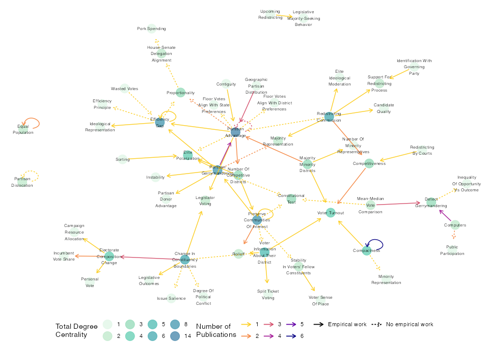

Understanding the gaps and connections across existing theories and findings is a perennial challenge in scientific research. Systematically reviewing scholarship is especially challenging for researchers who may lack domain expertise, including junior scholars or those exploring new substantive territory. Conversely, senior scholars may rely on longstanding assumptions and social networks that exclude new research. In both cases, ad hoc literature reviews hinder accumulation of knowledge. Scholars are rarely systematic in selecting relevant prior work or then identifying patterns across their sample. To encourage systematic, replicable, and transparent methods for assessing literature, we propose an accessible network-based framework for reviewing scholarship. In our method, we consider a literature as a network of recurring concepts (nodes) and theorized relationships among them (edges). Network statistics and visualization allow researchers to see patterns and offer reproducible characterizations of assertions about the major themes in existing literature.
netlit provides functions to generate network statistics from a literature review. Specifically, it processes a dataset where each row is a proposed relationship (“edge”) between two concepts or variables (“nodes”). The aim is to offer easy tools to begin using the power of network analysis in R for literature reviews. Using netlit simply requires researchers to enter relationships they observe in prior studies into a simple spreadsheet.
To install netlit from CRAN, run the following:
install.packages("netlit")Basic Usage
The review() function takes in a dataframe, data, that includes from and to columns (a directed graph structure).
In the example below, we use example data from this project on redistricting. These data are a set of related concepts (from and to) in the redistricting literature and citations for these relationships (cites and cites_empirical). See the main netlit vignette for more details on this example.
#> to from cites cites_empirical
#> 1 detect gerrymandering computers Altman & McDonald 2010; Wang 2016; Altman & McDonald 2011; Ramachandran & Gold 2018 Wang 2016
#> 2 public participation computers Altman & McDonald 2010; Altman & McDonald 2011 <NA>
#> 3 preserve communities of interest number of competitive districts Gimpel & Harbridge-Yong 2020 Gimpel & Harbridge-Yong 2020
#> 4 proportionality partisan advantage Caughey et al. 2017; Tamas 2019 <NA>
#> 5 efficiency gap partisan gerrymandering Chen 2017 Chen 2017
#> 6 constitutional test preserve communities of interest Stephanopoulos 2012 <NA>netlit offers four functions: make_edgelist(), make_nodelist(), augment_nodelist(), and review().
review() is the primary function (and probably the only one you need). The others are helper functions that perform the individual steps that review() does all at once. review() takes in a dataframe with at least two columns representing linked concepts (e.g., a cause and an effect) and returns data augmented with network statistics. Users must either specify “from” nodes and “to” nodes with the from and to arguments or include columns named from and to in the supplied data object.
review() returns a list of three objects:
- an augmented
edgelist(a list of relationships withedge_betweennesscalculated), - an augmented
nodelist(a list of concepts withdegreeandbetweennesscalculated), and - a
graphobject suitable for use in otherigraphfunctions or other network visualization packages.
Including node attributes
Users may wish to include edge attributes (e.g., information about the relationship between the two concepts) or node attributes (information about each concept). We show how to do so below. But first, consider the basic use of review():
lit <- review(literature, from = "from", to = "to")
lit#> A netlit_review object with the following components:
#>
#> $edgelist
#> - 69 edges
#> - edge attributes: edge_betweenness
#> $nodelist
#> - 56 nodes
#> - node attributes: degree_in, degree_out, degree_total, betweenness
#> $graph
#> an igraph object
head(lit$edgelist)#> from to edge_betweenness
#> 1 computers detect gerrymandering 2.0
#> 2 computers public participation 1.0
#> 3 number of competitive districts preserve communities of interest 86.0
#> 4 partisan advantage proportionality 19.5
#> 5 partisan gerrymandering efficiency gap 13.5
#> 6 preserve communities of interest constitutional test 7.0
head(lit$nodelist)#> node degree_in degree_out degree_total betweenness
#> 1 computers 0 2 2 0.0
#> 2 number of competitive districts 1 2 3 64.0
#> 3 partisan advantage 6 8 14 111.5
#> 4 partisan gerrymandering 1 7 8 42.0
#> 5 preserve communities of interest 2 6 8 79.0
#> 6 mean-median vote comparison 0 2 2 0.0Edge and node attributes can be added using the edge_attributes and node_attributes arguments.
edge_attributes is a vector that identifies columns in the supplied data frame that the user would like to retain. (To retain all variables from literature, use edge_attributes = names(literature).)
node_attributes is a separate dataframe that contains attributes for each node in the primary data set. node_attributes must be a dataframe with a column node with values matching the to or from columns of the data argument.
The example node_attributes data include one column type indicating a type for each each node/variable/concept.
#> node type
#> 1 campaign resource allocation effect
#> 2 candidate quality effect
#> 3 change in constituency boundaries condition
#> 4 preserve communities of interest goal
#> 5 competitiveness goal
#> 6 computers condition
lit <- review(literature,
edge_attributes = c("cites", "cites_empirical"),
node_attributes = node_attributes)
lit#> A netlit_review object with the following components:
#>
#> $edgelist
#> - 69 edges
#> - edge attributes: cites, cites_empirical, edge_betweenness
#> $nodelist
#> - 56 nodes
#> - node attributes: type, degree_in, degree_out, degree_total, betweenness
#> $graph
#> an igraph object
head(lit$edgelist)#> from to cites cites_empirical edge_betweenness
#> 1 computers detect gerrymandering Altman & McDonald 2010; Wang 2016; Altman & McDonald 2011; Ramachandran & Gold 2018 Wang 2016 2.0
#> 2 computers public participation Altman & McDonald 2010; Altman & McDonald 2011 <NA> 1.0
#> 3 number of competitive districts preserve communities of interest Gimpel & Harbridge-Yong 2020 Gimpel & Harbridge-Yong 2020 86.0
#> 4 partisan advantage proportionality Caughey et al. 2017; Tamas 2019 <NA> 19.5
#> 5 partisan gerrymandering efficiency gap Chen 2017 Chen 2017 13.5
#> 6 preserve communities of interest constitutional test Stephanopoulos 2012 <NA> 7.0
head(lit$nodelist)#> node type degree_in degree_out degree_total betweenness
#> 1 computers condition 0 2 2 0.0
#> 2 number of competitive districts goal 1 2 3 64.0
#> 3 partisan advantage goal 6 8 14 111.5
#> 4 partisan gerrymandering condition 1 7 8 42.0
#> 5 preserve communities of interest goal 2 6 8 79.0
#> 6 mean-median vote comparison metric 0 2 2 0.0Mapping literature networks
Below is a plot of redistricting literature network from the main netlit vignette using the graph object returned by the netlit::review() function as the input to network graphing functions from packages like ggnetwork. The nodelist and edgelist objects also provide required inputs for other network visualization packages, e.g. ggraph or visNetwork (vignettes on how to make similar plots in ggraph and visNetwork will be posted shortly).
Nodes represent theoretical concepts, shaded by total degree centrality. Arrows connect concepts theorized as directional relationships in works, colored by number of works. Solid edges indicate empirically studied connections; dashed are relationships that have been theorized but not studied empirically.
